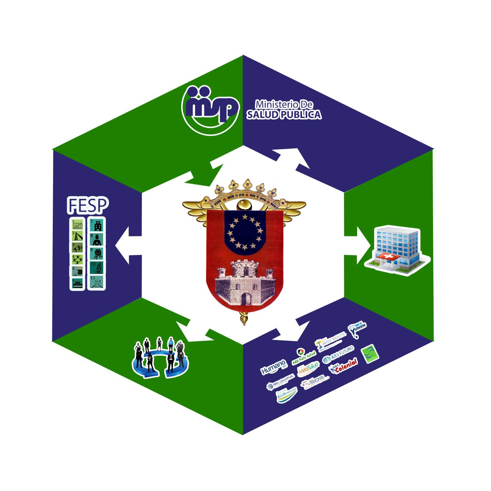

Dirección Provincial de Salud
La Vega
Departamentos. ¿Cómo se Dividen?
La Vega
Departamentos. ¿Cómo se Dividen?
El Servicio Nacional de Salud tiene como propósito asegurar la efectividad, técnica, administrativa y financiera de los Servicios Regionales de Salud.
Niveles Organizativos y Funcionales Estructuralmente está constituido por tres (3) niveles organizativos y funcionales, para cubrir las necesidades en términos de salud, de más de 10 millones de ciudadanos y ciudadanas con derecho a la salud.
Quiero Saber Más Sobre los DepartamentosEstos son los Departamentos más Importantes

El departamento de Salud se encarga de la promoción y protección de la salud pública, asegurando el acceso a servicios de salud de calidad para todos los ciudadanos. Su objetivo principal es prevenir enfermedades, fomentar hábitos saludables y garantizar un ambiente seguro y saludable.

El departamento de Diagnóstico se especializa en la identificación y evaluación de enfermedades mediante pruebas y procedimientos médicos avanzados. Proporciona diagnósticos precisos y oportunos que son esenciales para la planificación y ejecución de tratamientos efectivos.

El departamento de Epidemiología se dedica al estudio y análisis de la distribución y determinantes de las enfermedades en la población. Su trabajo es crucial para la implementación de estrategias de prevención y control de epidemias y pandemias, así como para la mejora de la salud pública.

El departamento de Cardiología se enfoca en el diagnóstico, tratamiento y prevención de enfermedades del corazón y del sistema circulatorio. Sus especialistas trabajan para mejorar la salud cardiovascular de los pacientes mediante la atención médica avanzada, la investigación y la educación.

El Servicio Nacional de Salud (SNS) fue creado en fecha 16 de julio del año 2015, mediante la Ley 123-15, con el fin de desarrollar un sistema de salud y de seguridad social más efectivo, con más calidad y más accesible, que brinde los servicios que la gente necesita.
Ejes TransversalesGarantizar el acceso equitativo a servicios integrales de salud con calidad, promoviendo la producción social de Salud, a través del ejercicio de la rectoría y funciones esenciales de la salud pública, para satisfacer las necesidades de la población, con énfasis en los grupos prioritarios.
Ser reconocida como la máxima autoridad sanitaria provincial por nuestro desempeño efectivo en las funciones de rectoría y el cumplimiento de las Funciones Esenciales de la Salud Pública, con RRHH competentes y comprometidos con los principios de la ética y la solidaridad humana.